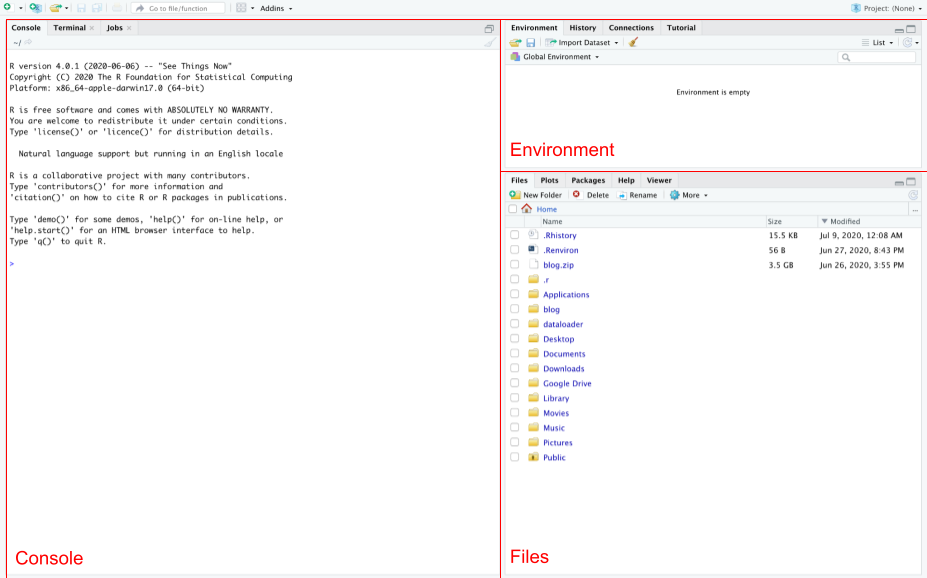
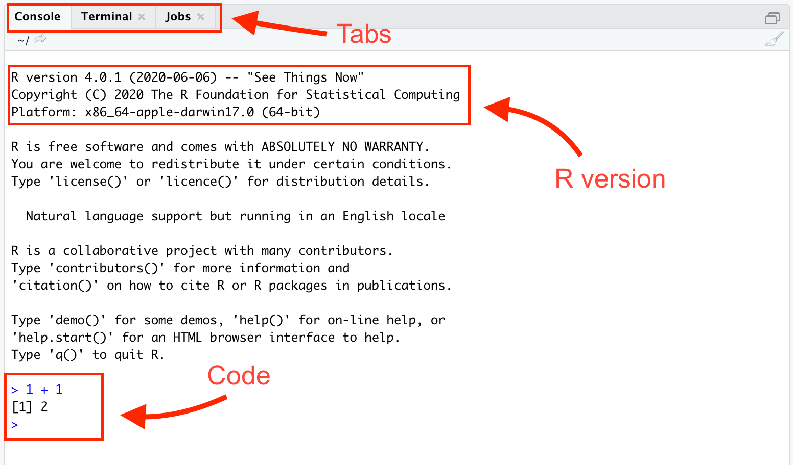
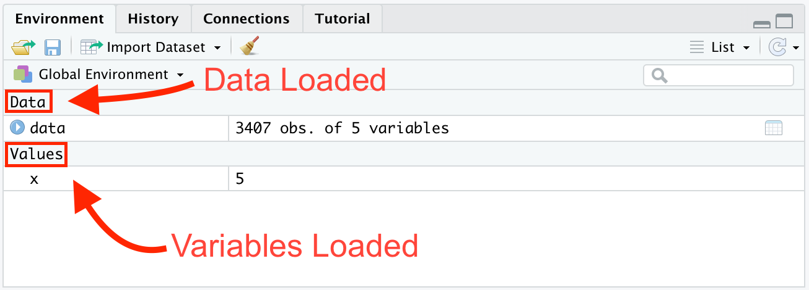
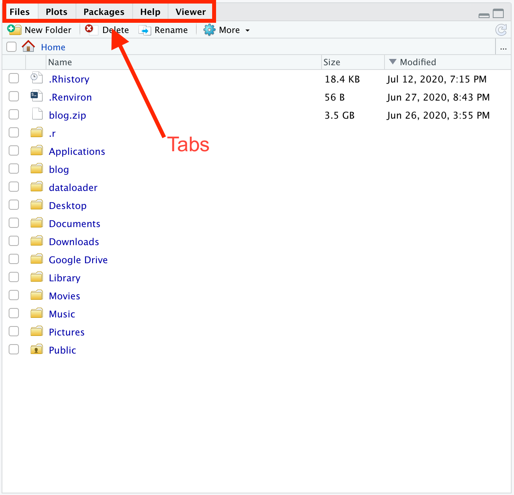
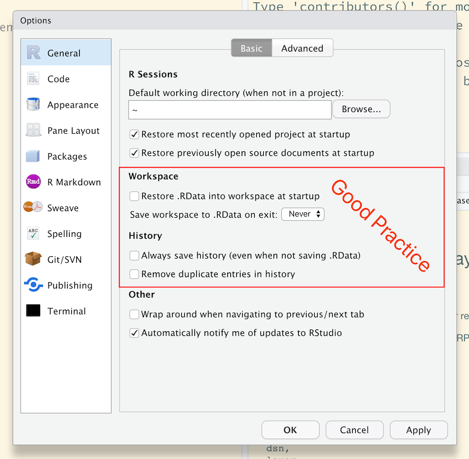
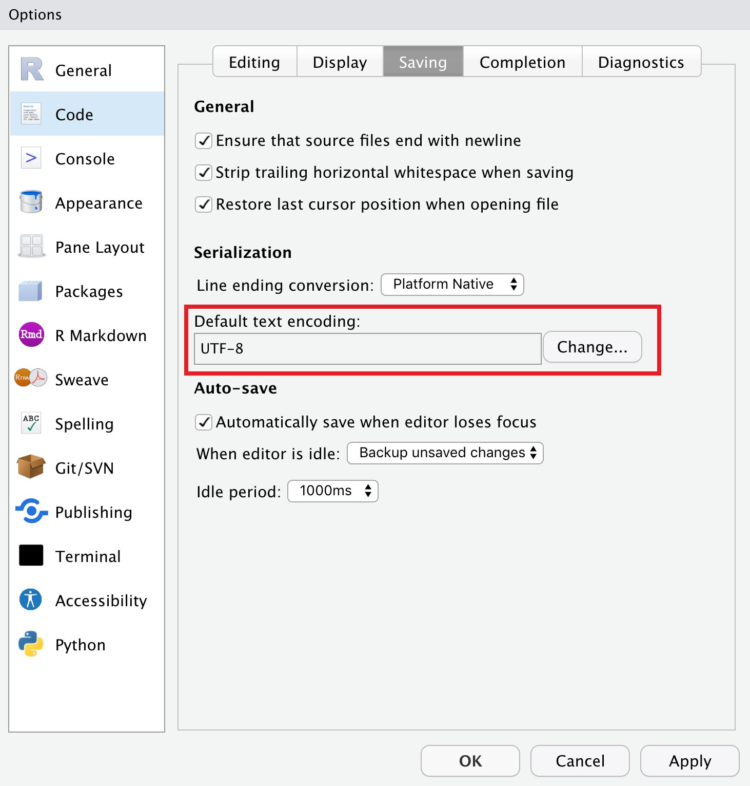
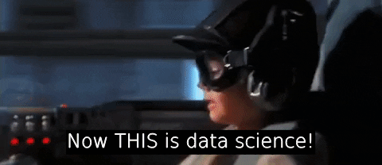

Introduction to R and RStudio!
Let’s dig into the R programming language and the RStudio integrated developer environment
Ikki xil dasturlash tili bor: biri - odamlar doim shikoyat qiladigan va ikkinchisi - hech kim foydalanmaydigan - Bjarne Stroustrup
R qanday til?
R - ma’lumotlar (data) bilan ishlashga mo’ljallangan dasturlash tili bo’lib, statistiklar, ma’lumotlar ilmi (data science) bilan shug’ullanuvchilar (iqtisodchi, jurnalist va deyarli barcha ijtimoiy fanlar) tomonidan keng ishlatiladi.
Nima uchun aynan R?
- Umumiy maqsadga yo’naltirilgan dasturlash tili (A general-purpose programming language vs domain-purpose);
- CRAN (Comprehensive R Archive Network, the official repository), Github, etc. da 30 mingdan ortiq package’larga ega;
- tidyverse, ma’lumotlar ilmi bilan shu’gullanuvchilar uchun maxsus package’lar to’plamiga ega. .
2023 yil holatiga ko’ra, R dasturlash tillarining ommabopligi ko’rsatkichi bo’lgan TIOBE indeksida 13-o’rinni egallaydi
R and RStudio yuklash
Demak kurs davomida R via RStudio dan foydalanamiz. R avtomobil dvigateli bo’lsa, RStudio uning dashbordi.
Aniqroq aytganda R bu:
open-source statistik dasturlash tili;
statistk hisob-kitob va grafiklar uchun environment;
Package’lar yordamida uning imkoniyatlari kengayadi.
R Studio esa
R’ni ishlatish uchun qulay interfeys (IDE (integrated development environment)), misol uchun “Men R kodini RStudio IDE’da yozaman”;
RStudio R’ni ishlatish uchun majburiy emas, biroq odatda R userlari tomonidan keng foydalaniladi;
R’ni RStudio’siz ishlatish mumkin, lekin RStudioni R’siz ishlatib bo’lmaydi.
R and RStudio (Desktop version)’ni kompyuterga yuklang va o’rnating.
RStudio Desktop (the free version) yuklang and o’rnating.
Agar kompyuter Windows bo’lsa, R Toolsni yuklang va o’rnating. Bu faqat Windows userlari uchun..
Sizga keraklisi Rtools42 installer. Linki ushbu sahifaning 5 paragrifida
R dan RStudio orqali foydalanish

Avtobil dvigateli bilan to’g’ridan-to’g’ri aloqa qilmaganimizdek, R dasturidan foydalanish uchun RStudio interfeysidan foydalanish yetarli. Har doim RStudioda ishlash kerak; to’g’ridan-to’g’ri R da emas.
RStudioni oching. Siz uchta panellarga ko’zingiz tushadi: Console panel, Environment panel va Files panel.

Bu workspace deb nomlanadi. Chapdagi eng katta paneldan boshlang:

Unda siz 3ta tabga ko’zingiz tushadi. Console and Terminal tablarga e’tibor bering. R ochilganda, Console R ning qaysi versiyasiligidan foydalanayotganimiz haqida axborot beradi. Console’da kod yozish va uni run qilishingiz mumkin. Masalan, 1 + 1 deb yozib, Enterni bossangiz, Console 2 ni chiqaradi.
Endi o’ng yuqori burchakka qarang:

Biz foydalanadigan asosiy 2 ta tablar - Environment va Git (hali ko’ringani yo’q). Environment tab hozirda Rga yuklangan va foydalanish mumkin bo’lgan dataset va o’zgaruvchilarni ko’rsatadi. Ushbu holatda R ga biz 3407 qator va 5 ta ustundan iborat bo’lgan datasetni yuklanganini va 5 ga teng bo’lgan x o’zgaruvchi mavjudligini ko’rsatadi. Sizda Environment bo’sh turgan bo’lishi kerak. Kelinglar uni o’zgartiramiz. Console’ga boring va quyidagini yozing:
x <- 5Bu kod 5 sonini x degan obyektga aylantirdi. <- R da qiymatlarni obyektga assign qilish uchun ishlatiladi. Endi Enter’ni bosing va 5 ga teng bo’lgan x obyektini ko’rasiz. Har doim Enter/Return tugmachasini bosishingiz kerak.
Pastki o’ng burchakdagi panelga qarang:

Files tabi kompyuteringizdagi fayl tizimini ko’rsatadi. Keyinchalik proekt yaratganingizda ushbu tab proyekt joylashgan papkaning contentini ko’rsatadi.
Package o’rnatish
R package’lar, (libraries deb ham nomlanadi), R ga qo’shimcha imkoniyatlar yaratib uning kuchini oshiradi.

R bu yangi telefon deb faraz qilsak, R package’lar uning ilovalaridir.
Instagramga o’xshatish mumkin. Yangi telefon olsangiz instagramdan foydalanish uchun:
- Ilovani yuklash kerak: Telefon yangi bo’lgani uchun Instagramm ilovasi telefonda yo’q. Buni siz bir marta boshida amalga oshirasiz.
- Ilovani ochish: Instagram o’rnatilgandan so’ng uni ochish kerak. Buni qachon ilovadan foydalansangiz har safar qilishga to’gri keladi.
R package’lar bilan ham jarayon huddi shunday.

Package’ni yuklash: Bu telefonga ilova o’rnatishdek gap. Ko’p package’lar o’rnatilmagan bo’ladi. Shuning uchun package’dan birinchi marta foydalanishda uni yuklash kerak. Bir marta yuklash yetarli.
Package’ni chaqirish (load): Package’ni chaqirish telefonda ilovani ochishdek gap. Ularni har doim RStudio ni ishlatishni boshlaganda chaqirish zarur.
Package’larni yuklashdan oldin quyidagi buyruqni run qiling:
options(pkgType = "binary")Kelinglar foydali package’ni o’rnatamiz.
#install.packages("tidyverse")Consolda yuqoridagi kodni run qiling. Har doing package nomini qo’shtirnoqqa oling.
One tricky aspect of this process is that R will occasionally ask you:
Do you want to install from sources the packages which
need compilation? (Yes/no/cancel)Unless you have a good reason not to, always answer “no” to this question.
R package’lar asosan ikkita joyda saqlanadi:
Yaxshi ishlangan, yakuniga yetgan package’lar CRAN (rhymes with “clan”)da turadi. CRAN’dagi package’larni o’rnatish uchun ushbu koddan foydalanamiz -
install.packages().2-chi joy, hali yaratilishi, tugatilishi bosqichida, barqaror bo’lmagan package’lar joylanadi - Github. Bulardan ham foydalanish mumkin. Buning uchun biz quyidagi buyruqdan foydalanamiz
remotes::install_github().Savollar
- As you installed the
tidyversepackage, what other packages were installed? - What happens if you tried to install
Tidyverse?
It could be that you already have all packages required by
tidyverseinstalled. In that case, you will not see any other packages installed. To see which of the packages abovetidyverseneeds (and thus installs if it is not present), type into the R console:tools::package_dependencies("tidyverse")In RStudio, you can also install (and update/remove) packages by clicking on the ‘Packages’ tab in the bottom right window .
It is very common these days for packages to be developed on GitHub. It is possible to install packages from GitHub directly. Those usually contain the latest version of the package, with features that might not be available yet on the CRAN website. Sometimes, in early development stages, a package is only on GitHub until the developer(s) feel it is good enough for CRAN submission. So installing from GitHub gives you the latest. The downside is that packages under development can often be buggy and not working right. To install packages from GitHub, you need to install the
remotespackage and then use the following functionremotes::install_github()We will not do that now, but it is quite likely that at one point later in this course we will.
You only need to install a package once, unless you upgrade/re-install R. Once installed, you still need to load the package before you can use it. That has to happen every time you start a new R session. You do that using the
library()command. For instance to load theggplot2package, typelibrary('ggplot2')You may or may not see a short message on the screen. Some packages show messages when you load them, and others do not. This was a quick overview of R packages. We will use a lot of them, so you will get used to them rather quickly.
- As you installed the
Package’lardan foydalanish (loading)
After you install a package, you need to “load” it by using the library() command. To load the remotes package, run the following code in the Console.
library(tidyverse)After running this code, a blinking cursor should appear next to the > symbol. (The > is the “prompt.”) This means you were successful and the tidyverse package is now loaded and ready to use. However, you might get a red “error message” which reads:
Error in library(remotes) : there is no package called ‘tidyverse’This error message means that you haven’t successfully installed the package. If you get this error message, make sure to install the remotes package before proceeding.
For historical reasons, packages are also known as libraries, which is why the relevant command for loading them is library().
R will occasionally ask you if you want to install some packages. You almost always want to, otherwise R would not be asking you.
Package use
You have to load each package you want to use every time you start RStudio. If you don’t load a package before attempting to use one of its features, you will see an error message like:
Error: could not find functionThis is a different error message than the one you just saw about a package not having been installed yet. R is telling you that you are trying to use a function in a package that has not yet been loaded. R doesn’t know where to “find” the function you want to use.
RStudio’da default optsiyalar
RStudioni 1-marta ishlatishni boshlashdan avval, quyidagi ishlarni qilish kerak:

Tools > Global Options (or Cmd + , on macOS)
Under the General tab:
- For workspace
- Uncheck restore .RData into workspace at startup
- Save workspace to .RData on exit : “Never”
- For History
- Uncheck “Always save history (even when not saving .RData)
- Uncheck “Remove duplicate entries in history”
This means that you won’t save the objects and other things that you create in your R session and reload them. This is important for two reasons
- Reproducibility: you don’t want to have objects from last week cluttering your session
- Privacy: you don’t want to save private data or other things to your session. You only want to read these in.
Your “history” is the commands that you have entered into R.
Additionally, not saving your history means that you won’t be relying on things that you typed in the last session, which is a good habit to get into!

Summary
Quyidagi ishni amalga oshirgan bo’lishingiz kerak:
- R va RStudioning oxirgi versiyalarini o’rnatgan bo’lishingiz kerak.
Let’s get started.

Savollar
R package nima va nima maqsadda ishlatiladi?
CRANdan package’lar yuklab olish uchun qanday funksiyadan foydalaniladi?